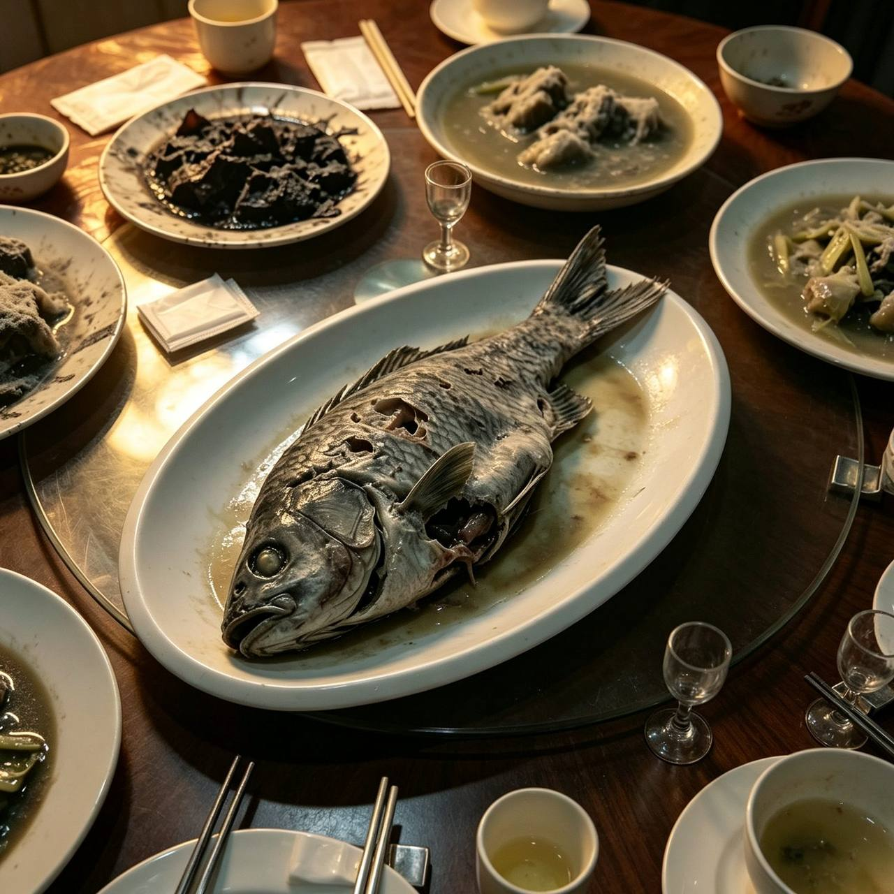
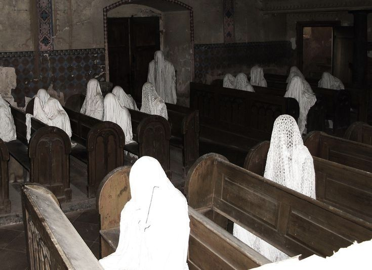
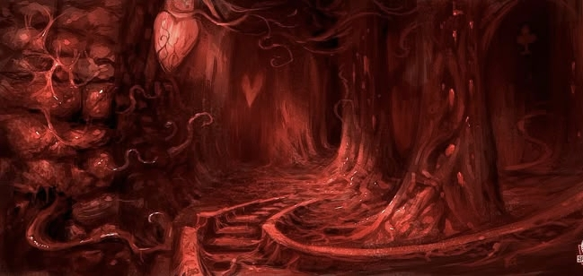

你那朋友，从回川水库吃完那顿鱼回来，嘴就再没停过。
连着三天，ta的饭桌上只有鱼。蒸鱼、煎鱼、煲汤的鱼、生鱼片，ta咽下去的样子，不像在吃饭，像在吞药。你拦ta，ta笑着说好吃。你问ta哪条鱼这么好吃，ta噎了半天，说不出来，只翻来覆去一句话：「你再没尝过吗。」
你想起那天吃得半截的鱼。从腹腔开始，一路烂到底，肉的纹理像在水里沤了三天。不对，那鱼根本就没在活水里养过。
第五天，你看见ta蹲在厨房的水槽边，用手指抠鱼鳞。抠到一半抬起头看见你，眼睛很亮，亮得不像ta。ta没哭，却像在哭。
当晚你定了两张去回川的火车票。硬座。你本想叫上别人，但没人愿意跟你走。
梅雨刚停，回川市闷得像捂在水汽底下。
下车的时候，朋友先你一步出站。ta说ta叔在这边办鱼场，做水产生意，绝对能带你们吃顿正经的。你随口应着，背上行李往ta指的巷子跟。巷子窄，两边水渍漫到鞋面，没人来收。
第三天，叔真请你们上桌了。一桌子鱼。一桌子。做法都是寻常做法，蒸、炸、炖、煲，但每一条鱼都缺了一只眼睛，破膛露肉的地方发白发灰，鱼皮紧贴着盘子，像被抽过。
朋友动筷动得极快。一桌人都动筷动得极快。
朋友夹起一块鱼腹，咬开；汁液从ta嘴角往下流，不是汤色，是暗的，像墨水。ta笑着说好吃，含含糊糊，要把一整条都吃下去。你夹了一筷，凑近。

从鱼的眼睛看它，先是一层白翳。白翳下面，原本该是眼珠的地方，长着第二层眼皮。第二层是张开的。第二层不是张开的，是里外同时开。鱼的嘴一直没闭，到底为止。
盘子底下压着一张湿透的旧报，纸质泡烂，墨字糊成一片；能看清的只剩三个字「不可」，不可什么，已经烂透。
你说吃不下。朋友顿了一下，抬起头看你。ta的笑还挂着，眼神却像隔着玻璃。ta说：「那就看着我们吃。」
你借口出去透气。人还坐在桌上，又不在桌上了。
你走错路，绕到了湖边。
月荷水库的堤坝空着。雾是倒着走的，从湖心往岸上压，压到你下巴底下。你本来是想抽根烟，摸到打火机，才发现手是冰的。
湖心的小岛。你远远看见一座破旧祠堂，门脸朝水。祠堂门口跪着一个人。白衣，正中，两侧依次有人。ta们没在祈祷。ta们都在笑。笑得肩膀抖。笑着笑着，有人把手里的杯子举起来，杯子里是水，水是红的。

跪着的那人慢慢抬手，自己自己打开胸口一道口子。血流得很慢。不像喷的，像从里面一点一点渗出来，和鱼腹里那点脓似的。血流进湖水，被雾抹开。
那人侧过脸。你认出那张脸，
是林茂才。
你从来没在某市某文件里看见过这个名字，但你认得。你在五楼他办公室外面的水泥地上抽烟的时候，见过他一面。他朝你笑了笑，给你递过一根软中华。
他跪在湖心，胸口慢慢裂开，还朝岸边笑了一下。
脚下一个芦苇结断掉，声音很轻。
笑声停了。所有白袍同时侧头，不对，ta们没有侧头，ta们的脸是从肩膀那边直接转过来的，先转的脸，再转的眼睛。眼睛像是粘在湖上的灯笼，亮得很齐。
ta们看见你了。
ta们笑得更厉害。笑得不出声，只是嘴角咧到耳根，你听见湖面上有什么东西响，像很多根筋同时被扯断。有人悄悄朝你这边走了两步，走得不像人，像芦苇丛在水下慢慢推。
你往后退。退了一步。
你视野开始闪烁。闪一下，是你蹲在岸边的草丛里，远处有人喊你名字；闪一下，岸边的水草全是红色的。红的不是水。是一些贴着水面的东西，像肠，又像没开的花。

闪一下，再闪一下。你按住自己的眼睛，眼睑底下有什么东西在动，像有人把鱼鳞一片一片往下贴。你不敢看，也不敢闭。
你松开步子就往堤外跑。
脚底踩不实。湿地里每一步都踩在软的上面，像踩在动物肚子上。芦苇刮面，刮出血痕。身后那些笑还在，慢慢挪远，但没断。你听见鞋底啪叽啪叽响，鞋底黏住了什么东西，你不敢低头看。
下了堤坝，进了巷子。路灯全亮着，但颜色不对。沿着巷子跑了两个路口，你的腿软下来，膝盖里像有一根筋一松，又一紧，又一松。
你倒下去。后脑勺磕在石板地上，不疼，麻。
你听见湖的方向有人在敲木鱼。木鱼声很远，像隔着一个雨季。不对，是敲你脑壳。
你没来得及确认任何事，眼皮就闭上了。
醒过来的时候，嘴里是甜的，藕粉味。
你张口。有人用手指用一截冷水里泡过的藕节抵住你下巴，抬起来，再放下一口温的。你咳了两声，慢慢把人看清，
他正太模样。十二三岁。头上顶着一朵荷花，半开半合，粉的。荷花下面是一双没表情的脸，眼底没有光，只有浅浅的回川味的潮湿。
他低头看你，没出声，像看一只被雨淹了的蚂蚁。
你抖着问，谁。他用那双没表情的眼看了你一眼，把手里的藕节换了一节新的，又凑到你嘴边。他轻轻说了一句话，像在念一个五年前就写好的剧本：
他看起来不太关心你死活。他只是顺路碰巧没走。他把手在你衣服上擦干净，转身要走，走了两步，又回一下头，看你那副哭不出来的样子，看得有点高兴。
他最后后把藕节丢给你，笑了一声。
你不知道是怎么回到朋友家的。
推门进去，朋友一个人坐在桌边，面前那条鱼已经凉透。ta回头看你，像从梦里被人拎起来，眼睛里的呆气还没退。
你叫了ta一声。ta愣了，应了。
你问ta：「还去吗？」
ta摇摇头，没吭声，把那条鱼推到桌沿边上，推了三下，最后把整盘推到地上。
第二天你们就离开了回川市。火车上，ta靠在窗边睡了七个小时，醒来问你一句，「昨天我是不是跟谁打过招呼了？」你说没有。ta点点头，又睡了。
你想起湖心朝你笑的那张脸。那个人，这会儿不知道还在不在岸上。
你再想起林茂才那三个字的时候，心里一紧，以后，再看到「林茂才同志归位」这一句话，你知道这六个字是买命钱。
， 第二节 · 腐 · 终 ，
原 先 那 条 鱼 · 还 在 你 胃 里